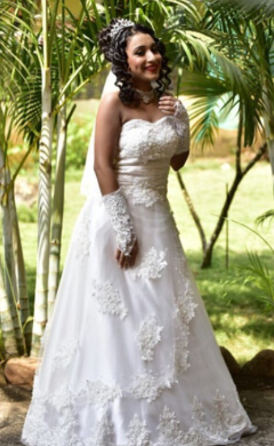

The Traditional Catholic Dress:
it is for Goa women showcases the Portuguese influence on Goa’s culture. This dress, often worn to church and religious functions, is modest and elegant. It consists of long skirts, simple blouses, and scarves known as mundu. The attire reflects both Catholic devotion and a touch of European style introduced during the colonial era. This outfit is most commonly worn during religious celebrations such as Christmas and Easter. Despite modernization, the Traditional Catholic Dress continues to be a cherished part of Goan Christian heritage, symbolizing faith and cultural continuity